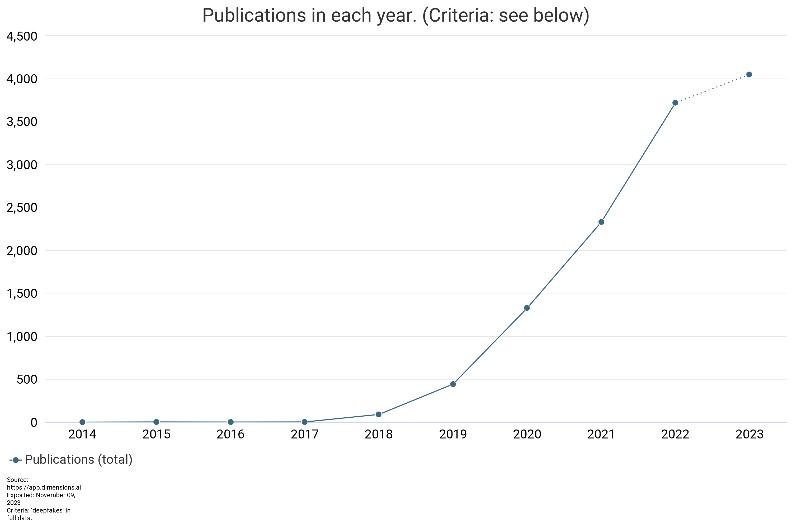
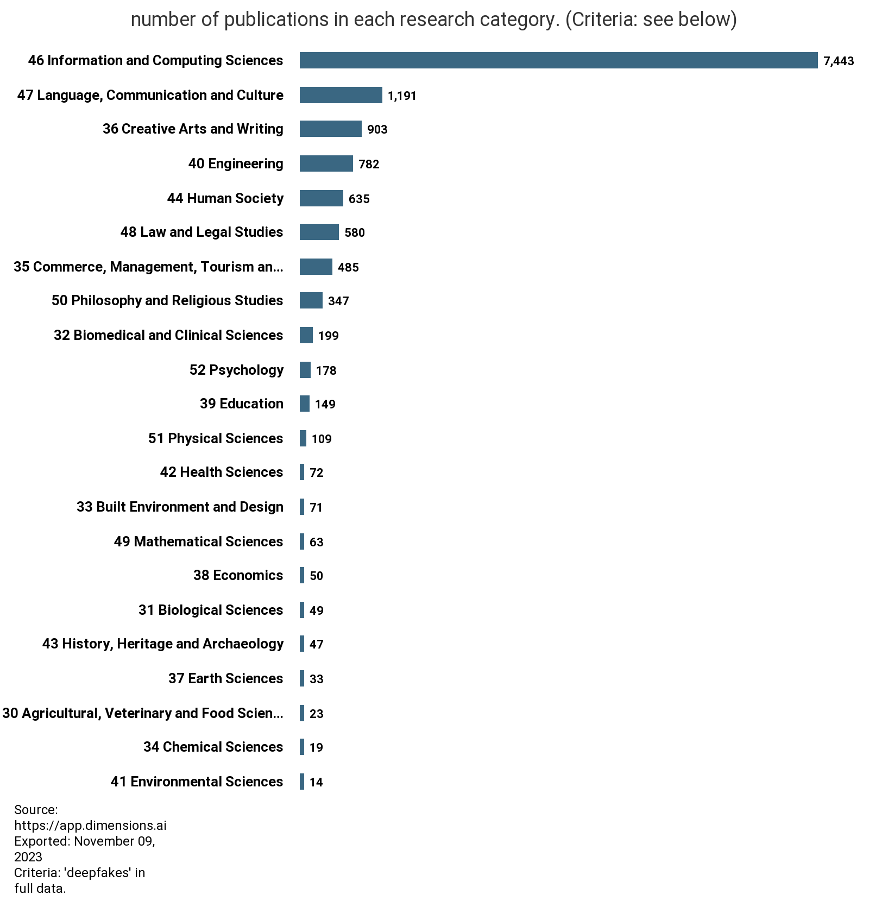

Deepfakes, Then and Now #
Deepfake videos and images that convincingly replace one person’s likeness with another’s, have rapidly grown in popularity and sophistication. The generation of deepfakes for both benign and nefarious purposes has only become more accessible through apps like FakeApp, Synthesia, Deepfakesweb.com and more. As a result, research into deepfakes has surged, driven by the need to understand, detect, and mitigate the potential threats they pose.

Several key factors drive increased interest in deepfakes research:
- Advancements in AI and Deep Learning: Breakthroughs in artificial intelligence and deep learning have made it easier to create highly convincing deepfakes, necessitating a parallel advancement in detection and prevention methods.
- High-Profile Incidents: Deepfake-related incidents involving public figures and politicians have heightened awareness about their potential for malicious use, prompting more researchers to address these concerns.
- Privacy Concerns: As deepfake technology can be misused to create non-consensual explicit content or deceive individuals, privacy advocates have called for more research and legislation to combat these issues.
- National Security: Governments and security agencies have recognized the potential threat deepfakes pose to national security and infrastructure, leading to increased funding for research efforts to develop countermeasures.
The landscape for deepfake research is expanding, taking root in disciplines outside of pure information and computer science:

Mitigation strategies for the proliferation of deepfakes requires a potentially interdisciplinary approach, seeing that it bleeds into every facet of society:
- Detection and Authentication: Researchers are developing tools and algorithms to identify deepfake content, often based on discrepancies in facial movements, blinking patterns, or audio inconsistencies.
- Policy and Legislation: Scholars are investigating the legal and ethical implications of deepfakes and advocating for regulations to prevent their misuse.
- Media Literacy and Enhanced Communication Skills: Efforts are underway to educate the public about deepfakes and provide tools for recognizing them, enhancing digital literacy. Erosion in public trust of important news sources and previously established language and communication rules is extremely detrimental, and deepfakes only exacerbate the issue.
- Countermeasures: Technological countermeasures, such as watermarking and authentication techniques, are being developed to hinder the creation and distribution of malicious deepfake content.
- Cross-Disciplinary Collaboration: Researchers from fields as diverse as computer science, psychology, and ethics are joining forces to address the multifaceted challenges posed by deepfakes.
The rise of deepfake technology has prompted a commensurate increase in research, as the potential consequences of its misuse become more apparent. Deepfake research is essential to stay ahead of malicious uses and protect privacy, security, and societal trust. As this technology continues to advance, collaboration between academia, industry, and government will be vital in our ongoing battle against the deepfake phenomenon.